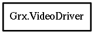

Grx.VideoDriver – grx-3.0 Reference Manual
Packages
grx-3.0
Grx
VideoDriver
detect
flags
inherit
init
modes
name
reset
select_mode
VideoDriver
Object Hierarchy:

Description:
public
struct
VideoDriver
The video driver descriptor structure.
Namespace:
Grx
Package:
grx-3.0
Content:
Fields:
public
string
name
public
VideoDriver
*
inherit
public
VideoMode
[]
modes
public
VideoDriverDetect
detect
public
VideoDriverInit
init
public
VideoDriverReset
reset
public
VideoDriverSelectMode
select_mode
public
VideoDriverFlags
flags